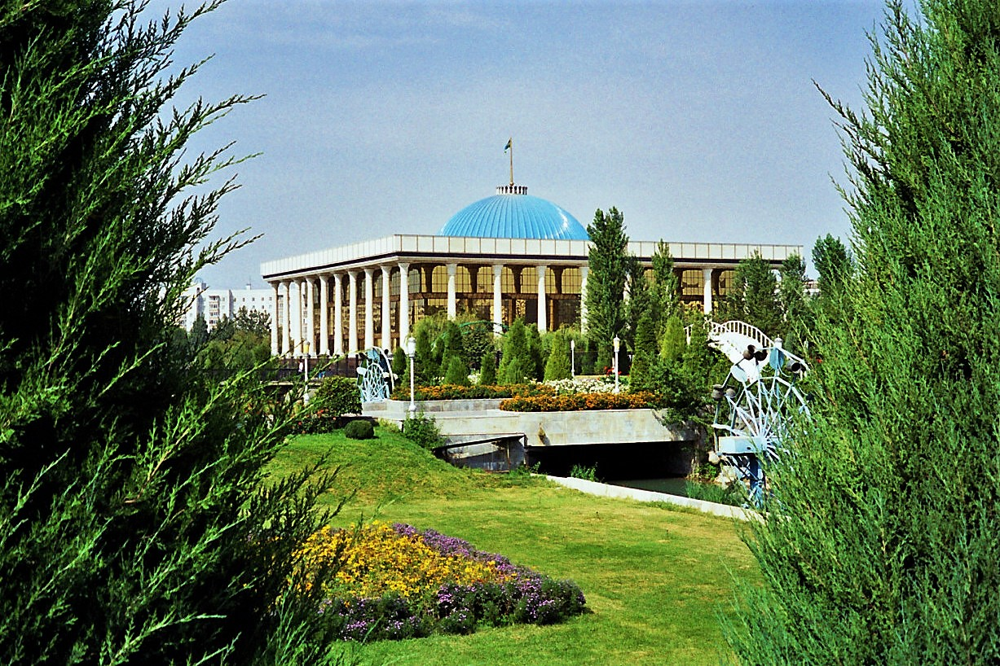

Oʻzbekistonda birinchi Oliy Majlis saylovlari (1994) va parlament tizimining shakllanishi
1994-yil 25-dekabrda mustaqil Oʻzbekistonning birinchi Oliy Majlisiga saylovlar boʻlib oʻtdi (ikkinchi bosqich 1995-yil yanvarda). 1992-yilgi Konstitutsiya asosida tuzilgan bu palata bir palatali boʻlib, 250 deputatdan iborat edi va sovet davridagi Oliy Kengash oʻrnini egalladi. Quyida bu saylov, uning tuzilishi va xalqaro baho faqat tasdiqlangan faktlar asosida bayon etiladi.

Mustaqillikdan keyingi davlat qurilishining muhim bosqichlaridan biri — milliy parlamentning shakllanishi boʻldi. 1994-yil 25-dekabrda mustaqil Oʻzbekistonning birinchi Oliy Majlisiga saylovlar oʻtkazildi. Quyida bu saylovning fon tarixi, sanalar, palata tuzilishi, ishtirok etgan partiyalar va natijalar hamda xalqaro baho faqat tasdiqlangan manbalar asosida bayon etiladi.
Fon: Oliy Kengashdan Oliy Majlisgacha
1994-yilgacha qonun chiqaruvchi organ Oliy Kengash — Oʻzbekiston SSRining sovet davridagi Oliy Sovetidan qolgan, nomi oʻzgartirilgan organ edi. Mustaqillik dastlabki yillarida aynan shu Oliy Kengash faoliyat yuritdi. Yangi, konstitutsiyaga asoslangan parlament — Oliy Majlis — 1995-yilda rasman Oliy Kengash oʻrnini egalladi.
Konstitutsiyaviy asos (1992)
Mustaqil Oʻzbekistonning birinchi Konstitutsiyasi 1992-yil 8-dekabrda Oliy Kengash tomonidan qabul qilindi. Aynan shu Konstitutsiya oliy qonun chiqaruvchi organ sifatida Oliy Majlisni (Oliy Majlis — Supreme Assembly) taʼsis etdi va uning huquqiy asosini belgilab berdi.
Birinchi saylov sanalari
Birinchi Oliy Majlis saylovining birinchi bosqichi 1994-yil 25-dekabrda boʻlib oʻtdi. Takroriy ovoz berish (ikkinchi bosqich) 1995-yil 8-yanvarda (39 saylov okrugida) va 1995-yil 22-yanvarda (7 okrugda) oʻtkazildi.
Palata tuzilishi: 250 oʻrin
Birinchi Oliy Majlis bir palatali (unicameral) boʻlib, 250 deputat oʻrnidan iborat edi. Parlament 2002-yil 27-yanvardagi referendumda maʼqullangan ikki palatali (Qonunchilik palatasi va Senat) tuzilmaga oʻtgunicha bir palatali boʻlib qoldi; ikki palatali Oliy Majlis birinchi marta 2005-yilda ish boshladi.
Partiyalar, nomzodlar va natijalar
250 oʻrin uchun 634 nomzod kurashdi: 250 nafari mahalliy kengashlar tomonidan, 243 nafari Oʻzbekiston Xalq demokratik partiyasi (XDP — Kompartiyaning vorisi) aʼzosi sifatida, 141 nafari esa Vatan taraqqiyoti partiyasi aʼzosi sifatida koʻrsatildi. Saylovda faqat hukmron XDP va hukumatga yon bosuvchi Vatan taraqqiyoti partiyalari ishtirok etishga ruxsat oldi; muxolif partiyalar (Birlik, Erk) roʻyxatdan oʻtkazilmagan/taqiqlangan edi. Oʻrinlar taqsimoti: mahalliy kengash nomzodlari — 167, XDP — 69, Vatan taraqqiyoti — 14. Mahalliy kengashdan oʻtgan deputatlarning taxminan 120 nafari ham XDP aʼzosi boʻlgani uchun partiya amalda koʻpchilikka ega boʻldi. Birinchi bosqichda saylovchilar faolligi 94,17% deb qayd etilgan.
Xalqaro baho
Hujjatlashtirilgan maʼlumotlarga koʻra, saylovda faqat ikkita roʻyxatdan oʻtgan, hukumatga yon bosuvchi partiya ishtirok etdi; haqiqiy muxolifat jarayondan chetda qoldirildi. Xalqaro kuzatuvchi guruhlari ovoz berishni kuzatib, qoʻllanilgan tartiblar yuzasidan turlicha fikr bildirdi. OSCE/ODIHR toʻliq saylov kuzatuv missiyasini oʻtkazmadi; natijada, bu saylov xalqaro kuzatuvchilar tomonidan erkin, raqobatli, koʻppartiyaviy ovoz berish sifatida baholanmaydi. Bu yerda bu holat faqat hujjatlashtirilgan fakt sifatida, baholovsiz keltirilmoqda.
Ahamiyati
1994–1995-yillardagi saylov mustaqil Oʻzbekistonning birinchi parlamentini shakllantirdi va 1991-yildan keyingi davlat qurilishi — sovet tuzilmalari oʻrniga konstitutsiyada belgilangan yangi institutlarni barpo etish jarayonining tarkibiy qismi boʻldi.
Manbalar
- Wikipedia — 1994–95 Uzbek parliamentary election (dates, 250 seats, 634 candidates, results, 94.17% turnout)
- Wikipedia — Oliy Majlis (unicameral origin; bicameral reform 2002, convened 2005)
- Wikipedia / Constitute Project — Constitution of Uzbekistan (adopted 8 December 1992)
- IPU PARLINE archive — Uzbekistan Oliy Majlis elections 1994–1995